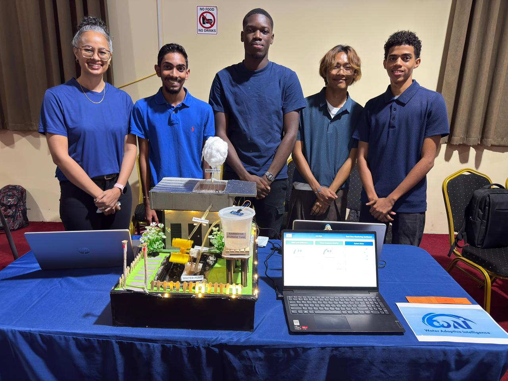
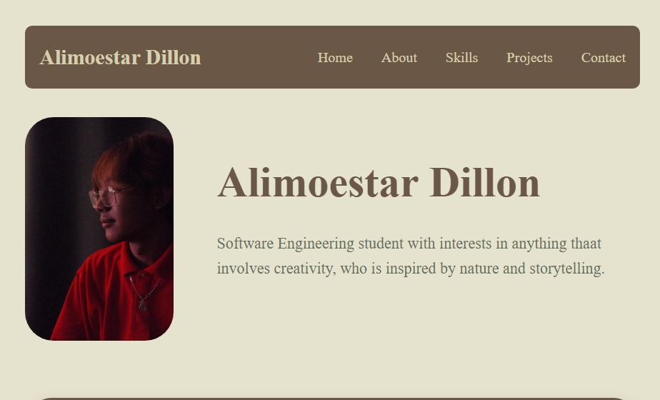

WAI Rainwater System
Sustainability ProjectA prototype focused on rainwater collection and sustainable water usage. Built as part of a school innovation project. I helped with the concept design of the prototype, which included a rainwater collection mechanism and a filtration system for clean water.

Portfolio Website
Web DevelopmentA personal portfolio website designed and coded using HTML and CSS in Visual Studio. Focused on layout, responsiveness, and UI design.

Flyer Design
Graphic DesignA flyer design created for a local Fair event. I focused on theme, typography, color scheme, and layout that would effectionally attract attention to viewers and visitors.